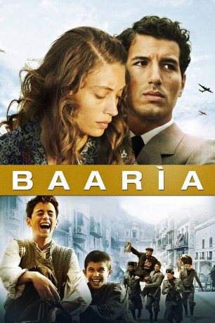

#1896 Baarìa - Eine italienische Familiengeschichte
 
 IMDB-Wertung: 6.9 / 10
IMDB-Wertung: 6.9 / 10  Metascore: 0
Metascore: 0 
Der arme Schafhirte Ciccio lebt zusammen mit seinem Sohn Peppino und dem Enkel Pietro in Baaria, einer kleinen sizilianischen Stadt zu Beginn der 1930er. Als ständiger Zeuge von Faschismus und sozialer Ungerechtigkeit wächst in dem jungen Peppino bald schon ein großes Interesse an Politik. Als er sich den Kommunisten anschließt und für mehr Gerechtigkeit kämpft, beginnt er, seine Familie immer mehr zu vernachlässigen.
Jahr: 2009
Dauer: 163 Minuten
FSK: 12
Land: Italien Studio: TOBIS FilmTonspuren:
Untertitel:
Auflösung: 1080p (1920x816) Größe: 14438 MB
Genre: Drama, Komödie
Regisseur:  Giuseppe Tornatore
Giuseppe Tornatore
Drehbuch: Giuseppe Tornatore
Soundtrack: Ennio Morricone
Darsteller:
- Francesco Scianna als Peppino Torrenuova
- Margareth Madè als Mannina
 Ángela Molina als Sarina
Ángela Molina als Sarina- Raoul Bova als Roman journalist
- Laura Chiatti als Student
- Donatella Finocchiaro als Haberdasher
- Luigi Lo Cascio als Beggard's son
- Enrico Lo Verso als Minicu
- Marcello Mazzarella als Podestà
 Monica Bellucci als Bricklayer's girlfriend
Monica Bellucci als Bricklayer's girlfriend- Michele Placido als Communist
- Michele Russo als Turiddu
- Gaetano Sciortino als Pietro as an adolescent
- Giuseppe Russo als Michele as a child
- Gisella Marengo als Matilde
- Mimmo Cuticchio als Silent film reader
- Giuseppe Sulfaro als Silent film audience member
- Francesco Foti als PCI regional director
- Tiziana Lodato als Invitee
- Lina Sastri als Tana / Beggard
- Nicole Grimaudo als Sarina as a young woman
- Ficarra als Nino
- Picone als Luigi
- Gaetano Aronica als Cicco
- Alfio Sorbello als Cicco as a young man
- Lollo Franco als Don Giacinto
- Giovanni Gambino als Peppino as a child
- Giuseppe Garufì als Pietro as a child
- Aldo als Speculator
- Paolo Briguglia als Catechist
- Luigi Maria Burruano als Chemist
- Giorgio Faletti als Corteccia
- Beppe Fiorello als Dollar seller
- Corrado Fortuna als Renato Guttuso
- Nino Frassica als Giacomo Bartolotta
- Leo Gullotta als Liborio
- Vincenzo Salemme als Leading actor
- Fabrizio Romano als Onofrio Pace
- Gaetano Bruno als Gino Artale
- Francesco Guzzo als Auctioneer
- Gaetano Balistreri als Carru Minà / Carru Minà's grandson
- Orazio Stracuzzi als Father Nespola
- Domenico Centamore als PCI comrade
- Giuseppe Butera als PCI comrade
- Anna Faranna als Angela as an adolescent
- Valentina Rubino als Angela as a child
- Desirée Rubino als Angela as a child
- Mariangela Di Cristina als Mannina as a child
- Davide Viviani als Peppino as an adolescent
- Giovanni Cangialosi als Stutterer
Datei: X:\2009(A-F)\Baarìa - Eine italienische Familiengeschichte (2009, FSK12, 1920x816).mkv seit 01.09.2015
Festplatte: HD 2008(G-Z)-2009(A-F)
 Es gibt insgesamt 91 Filme in der Gruppe '2009(A-F)'
Es gibt insgesamt 91 Filme in der Gruppe '2009(A-F)'